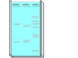
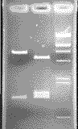

After electrophoresis, you must stain the DNA for visualization. You submerge the entire gel in methylene blue, which will bind to the DNA. You then rinse the gel repeatedly with water, so that the dye washes off the gel. The DNA will appear as blue bands that are easily seen when a light is passed through the gel.
After staining the gel, photograph it for analysis.
|
 |
 |
If a camera is not available, wrap the gel in plastic wrap and use a marking pen to outline the wells and locate the bands.
 Continue to Analysis of Results II.
Continue to Analysis of Results II.